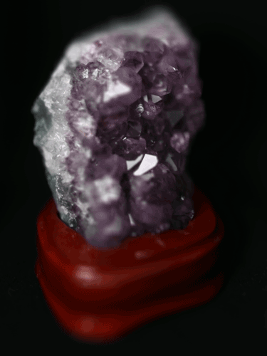
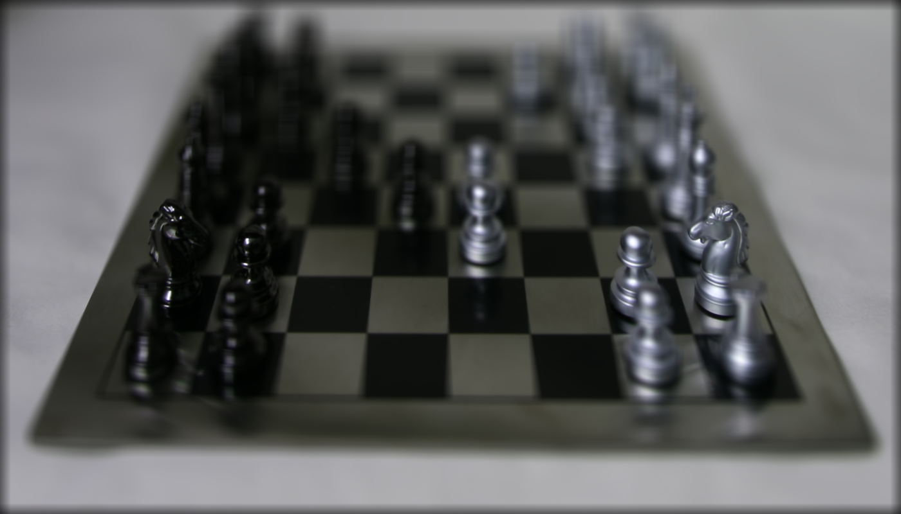
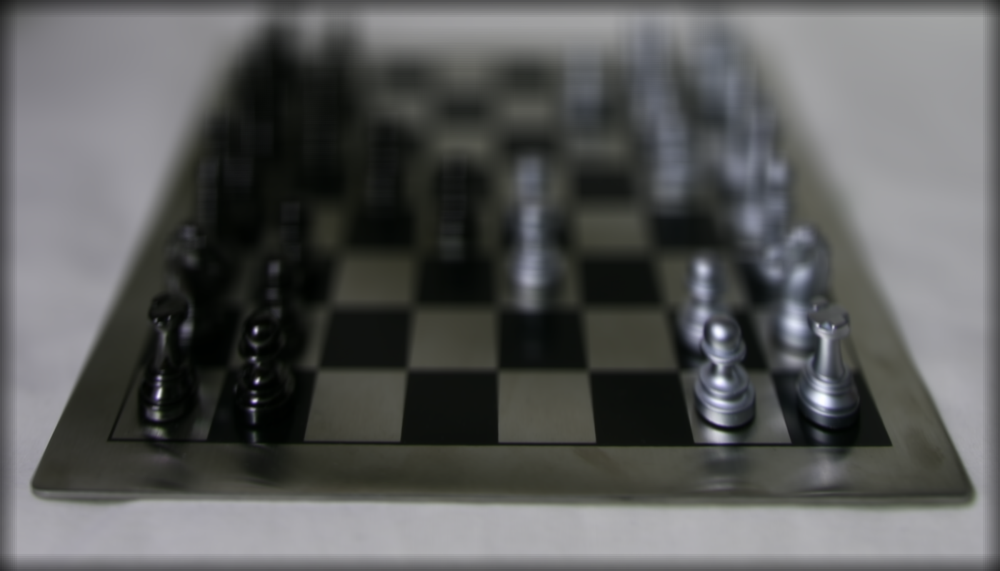
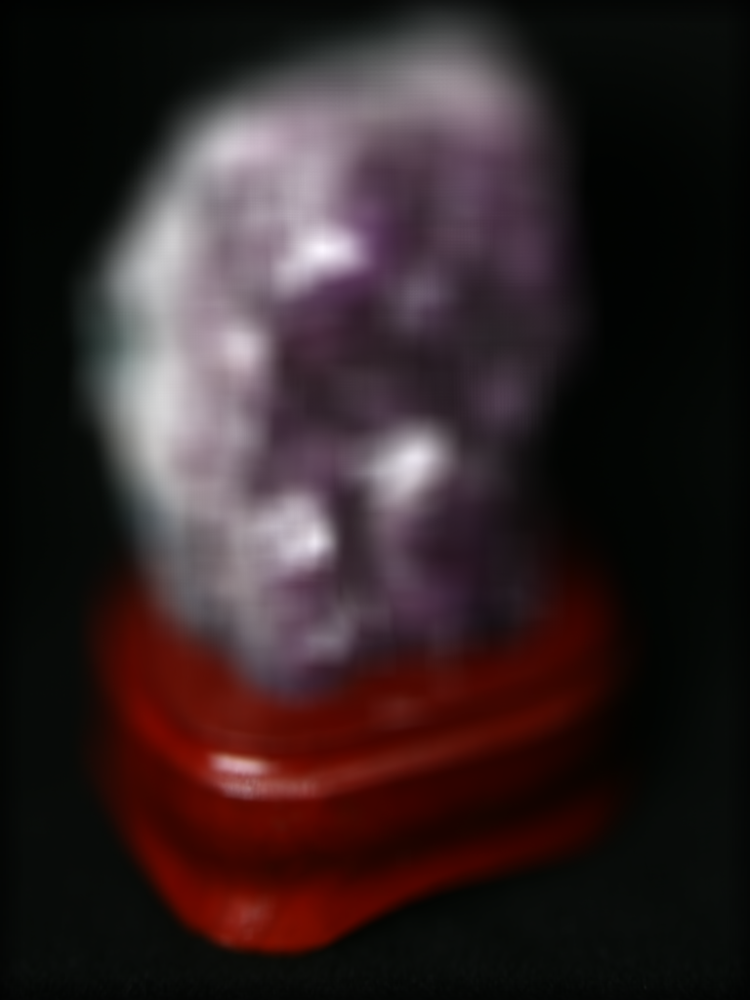
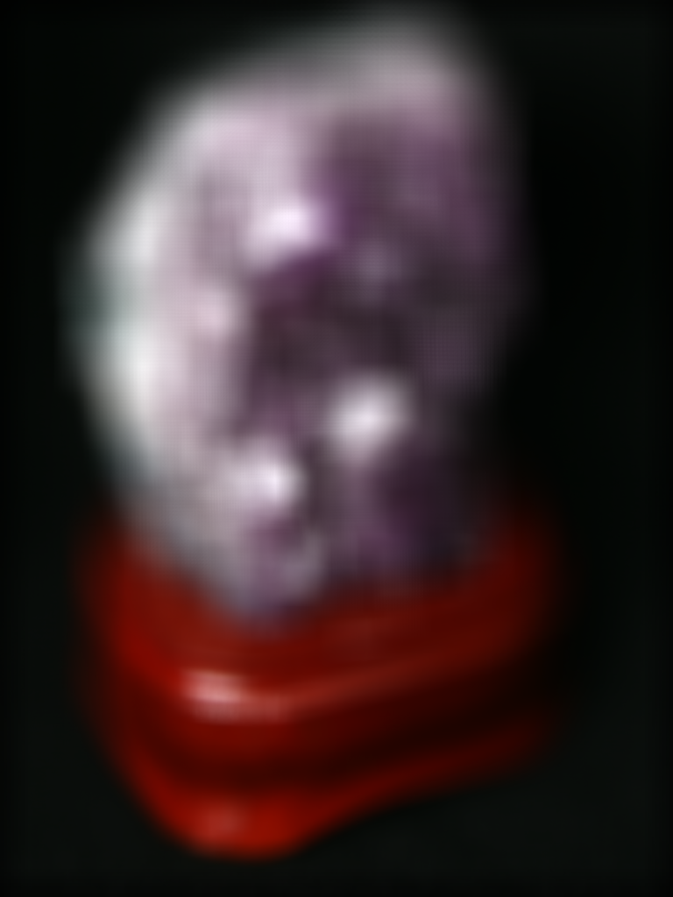
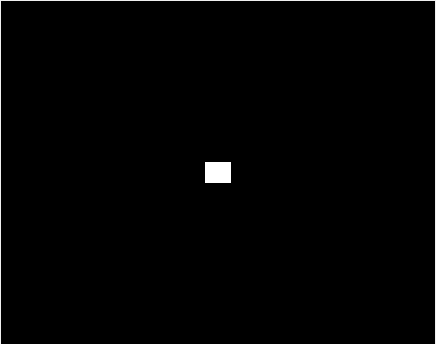
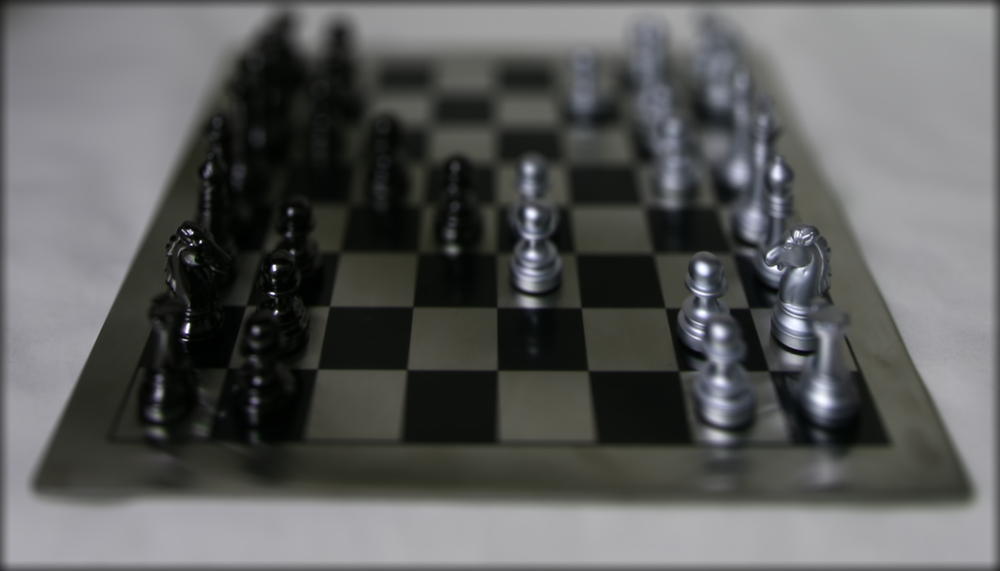
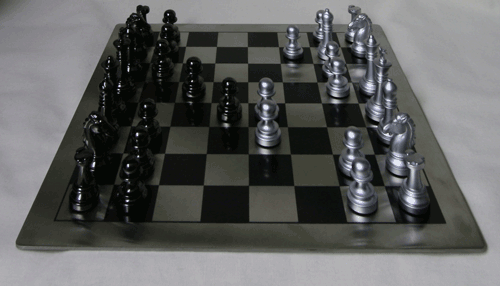

- Project Intro
- Depth Refocusing
- Aperture Adjustment
- Summary
Light Field Camera
Karl Cempron: CS194-26-AEG
Capturing multiple images over a plane orthogonal to the optical axis enables achieving complex effects using very simple operations like shifting and averaging. The goal of this project is to reproduce some of these effects using real lightfield data. Using rectified images from the Stanford Light Field Archive, I reproduced both the refocusing and aperture adjustment effects that can be made with a light field camera.
A sequence focusing on different segments of this image!
Depth Refocusing
The objects which are far away from the camera do not vary their position significantly when the camera moves around while keeping the optical axis direction unchanged. The nearby objects, on the other hand, vary their position significantly across images. Averaging all the images in the grid without any shifting will produce an image which is sharp around the far-away objects but blurry around the nearby ones.
A general equation is as follows: averaged_image = sum(image_list) / len(image_list)
Here are examples using 289 images taken from a 17 x 17 camera grid:
Averaged Chess Board
Averaged Rock Piece
Similarly, shifting the images to a centralized reference multiplied by a scalar w such that
(x_shifted, y_shifted) = w * (x, y), along with averaging, allows one to focus on object at different depths.
w = 1
w = 2
w = 3
 w = 4
w = 4
w = 1
w = 2
w = 3
w = 4
The resulting gifs show a sequence of depth refocusing where focus shifts from top to bottom as w inreases from 1 to 4. Notice that as w reaches the bounds mentioned, as is the case with w = 4, focus is directed towards the edge causing majority of the image to be blurred.
 Chess Refocusing Animation
Chess Refocusing Animation
Rock Refocusing Animation
Aperture Adjustment
For aperture adjustment, we try to emulate a camera's aperture system with effective aperture sizes.
The larger the aperture, the more light rays with larger angles will enter the imaging system. The result is an image which is blurred everywhere except where the light rays primarily converge.
Conversely, a lower aperture will allow less light which will produce a focus across the whole image. Averaging a large number of images sampled over the grid perpendicular to the optical axis mimics a camera with a much larger aperture. Using fewer images results in an image that mimics a smaller aperture.
Aperture Size Animation
The steps taken in creating a digital aperture effect are as follows:
1. Choose an effective radius for which we can select which images to shift and average on. In the examples shown, we select the origin to be the image corresponding to origin = cameragrid[8][8]. Any image that has a camera grid coordinate within the radius shall be included in the shifting and averaging.
2. Choose an appropriate scaler w to select where on the image we want to apply depth refocusing.
3. Average over the subset of shifted images.
Here the results of applying the digital aperture technique with the lowest aperture and the highest aperture.
 radius = 1, w = 2
radius = 1, w = 2
radius = 9, w = 2
radius = 1, w = 1
radius = 9, w = 1
The corresponding gifs display the change in aperture with radius sizes ranging [1, 9].
Chess Aperture Animation
Rock Aperture Animation
Summary
This project reinforced my understanding of depth focusing and the interactions with light rays and different apertures. I was also impressed at how straightforward the implementation of these visual effects were and that through the right approaches, really cool images can be produced. I also enjoyed how the effects created by using almost around 300 images but a lot of that is abstracted away from the viewer when they see the final image.